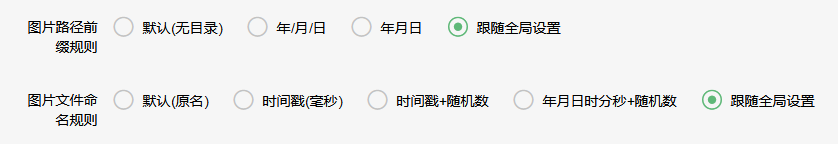
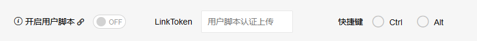
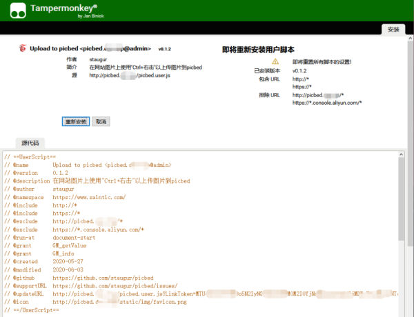
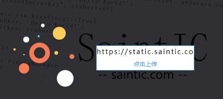
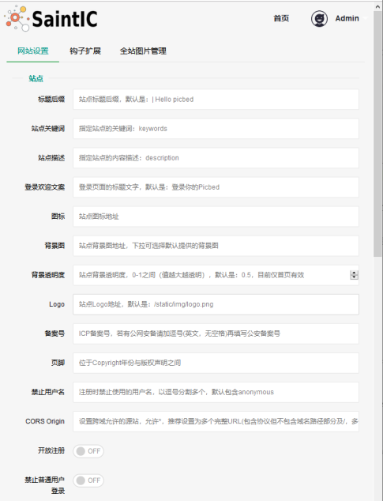
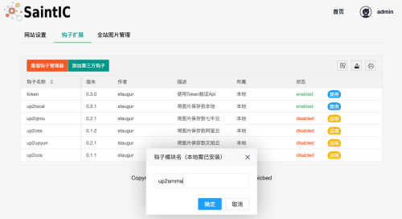
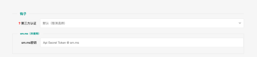

使用说明 - 概述¶
备注
使用就很简单了，Web应用，点点看看。
IE系列支持有限，建议使用现代化浏览器，推荐Firefox、Chrome。
0. 命令行¶
即flask子命令，其中 flask sa create 用来创建用户（包括管理员）。
创建管理员用户可以在启动程序前后。
$ cd /path/to/sapic/src
$ flask sa --help
Usage: flask sa [OPTIONS] COMMAND [ARGS]...
Administrator commands
Options:
--help Show this message and exit.
Commands:
clean 清理系统
create 创建账号
upgrade 版本升级助手
$ flask sa create --help
Usage: flask sa create [OPTIONS]
创建账号
Options:
-u, --username TEXT 用户名
-p, --password TEXT 用户密码
--isAdmin / --no-isAdmin 是否为管理员 [default: False]
-a, --avatar TEXT 头像地址
-n, --nickname TEXT 昵称
--help Show this message and exit.
// 以下命令创建admin账号，密码123456
$ flask sa create -u admin -p 123456 --isAdmin
1. 个人中心¶
个人中心包含个人资料、修改密码、用户设置、我的图片等。
个人资料只是简单的用户名、昵称、头像、邮箱等，但除此之外，还有一个Token信息。
用户填写邮箱保存配置后，会有验证提示，验证后的邮箱后续会支持一些功能。
如果管理员开启注册审核，那么新注册用户的用户名一行会有一个留言提示，可以给管理员留言，写下 你使用目的有助于审核通过。
1.1 Token¶
个人资料中值得一提的是Token，它是目前唯一一种能在API请求中认证用户的方法， 实际上，这是由内置的钩子(hooks/token.py)实现的（默认启用，管理员可关闭）。
Token每个用户唯一，可以随意重置、销毁再生成，具备API所有权，一旦泄露风险极大！
Token的使用也很简单，有两种方法：
一是Header，使用 “Authorization:Token 你的token值”
curl -XPOST -H "Authorization:Token xxx" http://sapic.example.ltd/api/upload
二是post body中附带token字段，例如:
curl -XPOST -d token=xxx -d other=xxx http://sapic.example.ltd/api/upload
警告
如需使用Token，那么墙裂建议使用基于它的 LinkToken ！
1.2 用户设置¶
用户设置是您在站点中的个性化设置，仅在个人登录后有效，不会影响到其他人！ 也就是说，登陆后，此处的一些设置可以覆盖管理员针对全站的设置，比如背景图。 此外，还有一些针对个人的单独设置，比如图片数量、放大度、统计开关。
1.2.1 LinkToken¶
在用户设置中有一个 Token分权引用表 ，是由内置的token钩子带来的，它基于 用户唯一的Token，配合访问控制而实现，用于安全的API调用场景。
出现LinkToken的初衷是因为我想在外部网站放置一个按钮，经过简单配置能一键上传 图片到sapic，但是好像需要鉴权，而用Token呢，放到前端页面，基本等于裸奔，所 以才有了这个以Token为基础的LinkToken。
当然，也会有泄露风险，但是设定访问权限控制，能将成本大大降低。
关于LinkToken的原理、如何配置、外部上传插件等参考专题页： 使用说明 - LinkToken及应用
1.2.2 URL后缀与应用场景¶
就是为了实现图片处理，除了本地图片，又拍、七牛、阿里、腾讯等对象存储都有 图片处理的功能，在图片链接后加一个分隔符和处理指令，能实现裁剪、旋转、水印 等高效处理。
sapic的URL后缀选项，就是定义分隔符和处理指令，当然由于存储图片可以是本地、 又拍云、七牛云等，且所有图片不一定保存在哪个里面，所以此处URL后缀的格式需要 注意下：
图片保存者(钩子名称):处理图片的分隔符与指令或样式，注意冒号，允许以逗号分隔多条！
小技巧
图片保存者，也就是钩子名称，可以在图片详情弹窗中看到，或者api的sender字段。
参考 Upload Api 上传流程，图片总会保存到某一个钩子中，默认 是本地，也就是up2local钩子，其他钩子参考 钩子 ，内置、第三方 都会有一个钩子名。
举例 => up2local:?v=1, up2upyun:!small，表示使用up2local保存的图片在场景 中URL后缀增加 ?v=1 ，使用up2upyun保存的图片在场景中URL后缀增加 !small
单独设置URL后缀也没有意义，需要结合应用场景使用：图片加载时、URL、HTML、rST、Markdown， 后四个场景是在复制URL格式时（API、图片详情弹窗）使用，图片加载时是指 浏览个人中心加载我的图片时使用URL后缀（包含查看图片详情时）。
举例，保存到up2upyun又拍云的图片链接是A，设置后缀up2upyun:!small，应用到图片加载时场景， 那么在打开个人中心浏览器请求的图片链接是 A!small
1.2.3 用户自定义图片上传前缀和文件名¶

v1.4.0之前上传图片只能根据全局设置保存图片的目录和文件名，现在用户可以自行 修改规则。
备注
登录用户上传的图片总是位于自己的用户名下，所以无论怎么修改都不影响别人， 但注意，如果使用规则中的默认选项（无子目录且使用文件原名），以前上传的 图片很有可能会被后上传的图片覆盖，而且保存图片的钩子可能不支持覆盖（目 前内置钩子只有GitHub、Gitee不会覆盖，上传提示失败）。
1.2.4 用户脚本¶
用户脚本是一段代码，它们能够优化您的网页浏览体验。
安装之后，有些脚本能为网站添加新的功能，有些能使网站的界面更加易用，有些则能隐藏网站上烦人的部分内容。
运行脚本需要浏览器扩展，早期Firefox的Greasemonkey，简称GM，中文俗称为“油猴子”， 所以用户脚本通常也称为“油猴脚本”。
不过sapic的油猴脚本支持的扩展是Tampermonkey。
Tampermonkey是一款免费的浏览器扩展和最为流行的用户脚本管理器，它适用于 Chrome, Microsoft Edge, Safari, Opera Next, 和 Firefox。
官网：https://www.tampermonkey.net
请先根据浏览器安装Tampermonkey扩展，然后在用户设置中配置。

脚本地址： Your Sapic URL/sapic.user.js
只有开启用户脚本后才能产生脚本链接，不严格要求填写LinkToken，但是没有的话将 会是匿名上传且不支持脚本更新。
开启并 保存 后，点击上图开关旁边的小图标，能直接打开脚本地址，此时扩展 会自动识别出用户脚本，给出安装界面：

安装完成后，在浏览器打开任意网站，鼠标移到图片上，Windows下是Ctrl/Alt键+右击， MacOS下使用Control/Option+点击，效果如下：

通过Image URL方式上传，除基本图片外(含svg)，支持base64类型。
限制条件：
只能上传img标签的图片
包裹了蒙层无法上传
部分网站CSP限制导致无法上传
sapic无https而采集https页面图片时无法上传
但是，还有一条限制！
用户脚本在全网通过ajax上传，基本都是跨域操作，所以，管理员必须设置 CORS Origin为*且LinkToken对Origin无限制，否则只能在允许的源站上传，而 其他网站上传失败。
简而言之，脚本必须获取到实际图片且允许上传才行
另外，如果是被墙的网站图片，你的服务器在国内，那么很遗憾无法下载，应该 会提示：未获取到图片或不允许的图片格式（除非管理员设置了可翻-qiang的代理）。
1.3 我的图片¶
我的图片顾名思义，登录用户能看到自己上传的所有图片，点击图片显示详情弹窗， 在弹窗里可以继续复制URL、HTML、reStructuredText(rST)、Markdown格式的图片链接， 当然允许删除，不仅是逻辑删除，只要后端存储钩子支持亦会删除实际图片文件， 目前的内置钩子均支持完全删除。
图片详情中相册名是可以修改的，双击显示已有相册，点击后面的√即可提交更新。
1.4 统计图表¶
Added in version 1.6.0.
初版的LinkToken调用统计表，展示了什么时间在什么系统、设备、浏览器上调用了 LinkToken哪个接口，以及认证与授权结果。
小技巧
在用户设置中有一个统计开关选项，其中LinkToken勾选后才能开启LinkToken调用 统计。
1. 控制台¶
管理员功能，进行诸如站点设置、钩子扩展等管理（下图可能非最新内容）。
具体内容请参考 使用说明 - 站点管理

如图示，添加一个第三方钩子：up2smms，这个钩子可以将上传的图片保存到sm.ms公共图床。

不过在web中添加这个钩子需要首先在部署的服务器上安装up2smms模块:
正式版本
$ pip install -U up2smms
开发版本
$ pip install -U git+https://github.com/sapicd/up2smms.git@master
添加钩子成功有提示，有些会附带模板，所以需要刷新下页面，比如上面这个会在 站点设置的钩子配置区域追加模板：

还有其他钩子，更多了解参考 钩子
3. 上传¶
小技巧
不论什么情况，上传总是通过HTTP API接口，基于此，内置了几种上传方式： Web首页选择本地文件/粘贴上传、用户脚本采集上传、JS SDK集成上传、cli.py命令行上传。
默认情况下，只有登录用户才允许上传图片，使用命令行创建用户后， 就能登录（当然，管理员可以开启开放注册功能）。
管理员也可以在站点设置中开启匿名上传，这样未登录用户就可以上传图片了。
Web中只有首页可以上传，同时最多选择10张，默认支持jpg、jpeg、gif、bmp、png、webp（管理员可修改，可以增加有效的图片后缀，如ico、svg），每张最大10M，上传成功后可以复制多个格式的图片链接，比如HTML、Markdown、reStructuredText(rST)和URL本身。
当然也可以使用API接口上传，而且首页上传也是依托接口，另外您还可以通过HTTP 或其他图床桌面程序上传，使用Token/LinkToken做用户认证。
在 1.2.0 版本发生变更.
首页支持选择或拖拽系统图片上传，粘贴图片或图片链接上传。
需要注意的是，粘贴图片上传（Windows/MacOS快捷键：Ctrl+V/Command+V） 支持复制浏览器内图片、系统软件内图片（QQ、微信等）、截图等上传， 不支持操作系统内的文件。
另外，MacOS操作系统可能会因为安全性限制导致无法粘贴其他应用图片上传。
API也支持了图片链接上传。
符合 http:// 或 https:// 的合法URL会进入图片链接上传模式， 参考Upload Api
在 1.13.0 版本发生变更: 支持视频上传（beta），默认未开启，需要管理员开启。
3.1 以下是几个客户端(通过API)上传的示例：¶
使用PicGo上传到图床
下载PicGo 并安装，打开 主界面，在 插件设置 中搜索 web-uploader 并安装，然后 在 图床设置-自定义Web图床 中按照如下方式填写：
url: http[s]://你的sapic域名/api/upload paramName: picbed jsonPath: src # 以上是匿名上传，仅在管理员开启匿名时才能上传成功 ## 如需登录上传，请使用token(在控制台-个人资料-Token查看)，以下两种任选: customHeader: {"Authorization": "Token 你的Token值"} customBody: {"token": "你的Token值", "album": "相册名或留空"} ## 可用LinkToken替换Token(仅用于Header)： customHeader: {"Authorization": "LinkToken 你的LinkToken值"} customBody: {"album": "相册名或留空"}设置完之后选择自定义Web图床为默认图床即可。
使用uPic上传到图床
下载uPic 并安装，在 偏好设置-图床 中 添加 自定义，信息如下：
API地址：http[s]://你的sapic域名/api/upload 请求方式：POST 文件字段名：picbed 其他字段：增加Header字段 或 增加Body字段，任选一种方式： - Headers数据 key: Authorization value: Token 你的Token值 ## 可用LinkToken替换Token(仅用于Header)： key: Authorization value: LinkToken 你的LinkToken值 - Body数据 key: token value: 你的Token值 # 如需设置相册，请增加Body字段，key为album，value即相册名 URL路径：["src"]
3.2 cli.py上传¶
cli命令行已经做了专项页面，请转到 使用说明 - sapicli
4. 其他页面¶
首页、登录、注册、忘记/重置密码等页面。
首页上传窗口，上面上传部分已经说明了其拥有的功能。
忘记密码：
Added in version 1.8.0.
根据用户名找回，要求其填写且验证了邮箱，否则无法重置密码。
登录、注册，简单页面，其中管理员开启注册后才有注册入口
5. 钩子¶
请转到 钩子
6. API¶
请转到 RESTful API
7. 数据备份¶
存储使用redis，内存级数据存储，可以使用 AnotherRedisDesktopManager 查看redis数据， 备份、迁移可以参考我的 这篇文章 。